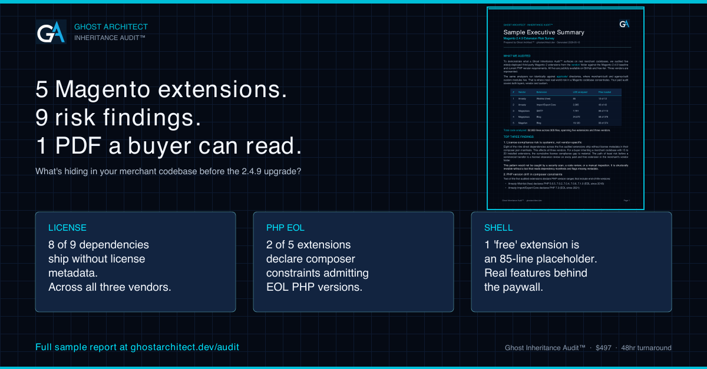

Ghost Inheritance Audit™ · Done-For-You
A senior-architect-grade audit of your Magento codebase.
Delivered in 48 hours.
Inheriting a merchant codebase before the 2.4.9 upgrade? Considering a Magento agency engagement, an M&A diligence target, or your own production stack? Ghost Inheritance Audit™ surfaces the license, dependency, and key-person risks hiding in your vendor extensions and custom app/code modules. Branded PDF report. 1-page executive summary. Senior-architect interpretation.

One Ghost Inheritance Audit™. PDF report + executive summary. 48-hour delivery.
Order Your Audit →See What You Get
A real audit. Five real extensions. Public-domain proof.
Before you spend $497, read the sample. We audited five widely-deployed third-party Magento extensions from three vendors (Mageplaza, Amasty, Magefan) against the Magento 2.4.9 baseline. The findings, the report format, and the executive summary in this sample are exactly what you receive on your codebase.
Sample Executive Summary & Audit Report
Magento 2.4.9 Extension Risk Survey · 2 pages · 122 KB
Download Sample (PDF) ↓What You Get When You Buy
Four deliverables. One price. No surprises.
Full audit on your entire codebase
No size cap. Whether you have one custom app/code module or a hundred vendor extensions, you get the complete scan.
5-section deal-grade PDF report
Stack Reality Check, Key-Person Risk, Hidden Dependency Map, Modernization Roadmap. Customized to your repository.
1-page written executive summary
Technical findings translated into business risk language a deal committee or executive sponsor can act on.
Delivery within 48 hours
From payment to your inbox. Signed NDA on request. No discovery calls, no scheduling.
Who's running your audit
Ghost Architect™ is built and operated by Ernst J. Wisner, a Senior Adobe Commerce Architect with nine years of enterprise Magento experience. Prior engagements include Stellantis, Medline Industries, British American Tobacco, and Visual Comfort & Co. Deep work on SAP integrations, Azure infrastructure, payment gateways, and PHP version migrations. Your audit isn't run by a junior reviewer with a checklist. It's run by the architect who built the tool.
Why $497
Less than the cost of a single consulting call.
A senior Adobe Commerce consultant performing the same analysis manually takes 4 to 6 hours and bills $150 to $250 per hour. That's $600 to $1,500 in consultant time, scheduled days or weeks out.
You get the same depth of findings, interpreted through nine years of Adobe Commerce architecture experience, in 48 hours. No scheduling, no discovery calls. You get the report.
$600 – $1,500
4 to 6 hours at $150 to $250/hr. Scheduled days or weeks out. Discovery calls required.
$497 flat
48 hours from payment to inbox. Senior-architect interpretation included. No call required.
Hours of back-and-forth
No discovery call. No SOW negotiation. No scheduling. The report is the deliverable.
Honesty Section
What this audit does not do.
Ghost Inheritance Audit™ is a pre-engagement triage tool. It surfaces risk patterns so a qualified engineer or diligence team knows where to look. Specifically:
- It identifies risk patterns. It does not prove exploitable bugs.
- It does not run CVE scans against transitive dependencies.
- It does not test runtime behavior, integration paths, or production data flows.
- It does not replace a full security audit, penetration test, or operational due diligence.
The report's value is in identifying where to look, not in delivering final answers. Findings should be validated by qualified personnel before any acquisition or modernization decision.
Frequently Asked
Common questions, answered.
How do I send you my codebase?
Three options. Easiest: send a GitHub repository link (private repos with a read-only collaborator invite work great). Alternatively: a Git clone URL with credentials, or a ZIP file uploaded to a temporary cloud storage link. We sign an NDA on request before any code transfer.
What if my codebase is huge?
No size cap. Whether you're auditing one custom app/code module or a hundred vendor extensions, your audit covers the complete scan. Larger codebases just take longer to process, but the 48-hour delivery window holds.
Can I get a custom scope?
Yes. If you want the audit focused on a specific module, branch, pull request, or extension subset, just tell us in your order confirmation email. Custom scope is included at the same $497 price. Larger custom engagements (multiple repositories, recurring audits, agency programs) are quoted separately.
Will my code be shared with anyone?
No. Your code is processed through Anthropic's Claude API for the synthesis step (under their zero-data-retention policy) and analyzed locally otherwise. Nothing is retained, shared, sold, or used for training. A signed NDA is available on request.
What if I'm not satisfied?
Email support@ghostarchitect.dev within 7 days of delivery with what didn't meet your expectations. If the report doesn't deliver substantive findings on your codebase, we'll either re-run the audit at no charge or refund the order. We have not had a refund request to date.
Do I need this if I already have Ghost Pro?
Probably not. Ghost Pro ($99/mo) lets you run Inheritance Audit yourself on as many repositories as you need. The $497 Audit is for buyers who want it done for them -- typically PE diligence teams, M&A advisors, agency owners doing pre-engagement reviews, or executive sponsors who need the analysis interpreted into deal-committee language. If you're comfortable running the CLI yourself, Pro is a better fit.
Does this only work on Magento?
No. Ghost Architect™ runs on any codebase, any language, any platform. The sample report focuses on Magento because the 2.4.9 upgrade is creating active demand. The same analyzers work on Laravel, Symfony, Drupal, WordPress, Node, Python, Go, Ruby, Java, .NET, and more. Tell us your stack in the order email.
Know what you're inheriting
before you sign the SOW.
$497. 48 hours. Senior-architect judgment. The report is the deliverable.
Payment via Stripe · Signed NDA on request · Questions: support@ghostarchitect.dev